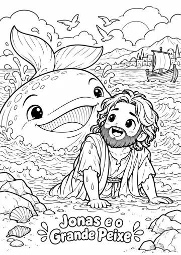
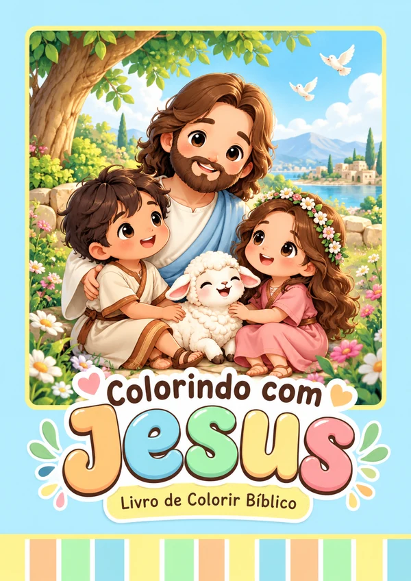

COLORINDO COM JESUS · LIVRO DE COLORIR
Menos tela.
Mais histórias
da Bíblia.
Seu filho colore. Você conta a história.
E vocês ganham um momento juntos.


para colorir
15 desenhos bíblicos em um livro digital para imprimir. Escolha uma página e separe os lápis.
já com a taxa Cakto
Pagamento seguro 7 dias de garantia
Receba por e-mail após a aprovação. Imprima em casa ou na gráfica.
VEJA ANTES DE COMPRAR
Qual história vocês vão
colorir primeiro?
Estas são 6 das 15 páginas do livro.
Toque no desenho para ver todos os detalhes.
E mais 9 desenhos no livro completo.
Daniel, Ester, Moisés e outras cenas para descobrir juntos.
Demonstração do material impresso. Você recebe o arquivo digital.
UM CONVITE PARA ESTAR PERTO
O próximo “vamos brincar?” pode virar uma boa história.
Nem todo momento em família precisa de uma grande produção. Uma folha, alguns lápis e uma história já são um começo.
A fé entra na conversa
Use as cenas para apresentar Noé, José, Jesus e outras histórias da Bíblia.
As telas fazem uma pausa
Uma atividade no papel para as mãos criarem e a imaginação participar.
O momento fica com vocês
Conte a história, escolha as cores e guarde o desenho como lembrança.
SEM COMPLICAÇÃO
Da compra ao primeiro
lápis no papel.
- 1
Garanta seu livro
Pague uma única vez com Pix ou cartão pelo checkout seguro da Cakto.
- 2
Receba e baixe
Após a aprovação, as instruções de acesso chegam ao e-mail usado na compra.
- 3
Imprima e aproveite
Escolha uma página, imprima em papel A4 e chame seu pequeno para colorir.
Não tem impressora? Tudo bem. Leve o arquivo a uma gráfica. Os desenhos podem ser impressos em preto e branco, uma página por vez.
O PRÓXIMO MOMENTO JUNTOS COMEÇA AQUI
Um livro para colorir.
Boas lembranças
para guardar.
Cada família, suas próprias cores.Colorindo com Jesus
Tudo pronto para o próximo momento de vocês.
- 15 desenhos bíblicosCenas cheias de detalhes para colorir.
- Capa colorida e índiceOrganize as páginas do seu livrinho.
- Orientações de impressão18 páginas no total, em formato A4.
- Arquivo para guardarImprima as favoritas no seu ritmo.
R$ 14,90 pelo livro + R$ 0,99 de taxa Cakto.
O valor acima já inclui a taxa.
Pix ou cartão · pagamento pela Cakto
Compre com tranquilidade. Se não for o que esperava, você pode solicitar reembolso em até 7 dias da compra. Nosso suporte ajuda você.
Produto digital para impressão. Livro físico, lápis e impressão não estão incluídos.
PODE PERGUNTAR
Só falta tirar
a sua dúvida?
Você também pode falar com a gente antes de comprar.
Conversar pelo WhatsAppO livro chega na minha casa?
Você recebe um arquivo digital para baixar e imprimir. Não há envio de livro físico. As imagens e o vídeo demonstram como o material pode ficar depois de impresso.
Quando recebo e como acesso?
Assim que o pagamento for aprovado, a Cakto envia as instruções ao e-mail informado na compra. Confira também o spam. Se precisar de ajuda para acessar, fale conosco pelo WhatsApp ou e-mail no rodapé.
É um livro de histórias ou de colorir?
É um livro de colorir com 15 ilustrações de cenas bíblicas e seus títulos. Ele não inclui os textos completos das histórias. Você pode contar a história ou ler a passagem bíblica enquanto a criança colore.
Serve para a idade do meu filho?
O material é voltado para crianças que gostam de colorir. Algumas ilustrações têm detalhes pequenos; por isso, veja as prévias para decidir se combinam com o momento da sua criança. Um adulto pode acompanhar e ajudar.
Preciso de impressora colorida?
Não. Os desenhos são em preto e branco e podem ser impressos em papel A4 comum, em casa ou na gráfica. A capa é colorida, mas você também pode imprimi-la em preto e branco.
Posso imprimir aos poucos ou repetir um desenho?
Sim. Baixe e guarde o arquivo para escolher quais páginas imprimir para uso pessoal da sua família. Você não precisa imprimir tudo de uma vez.
Tem mensalidade? E se eu não gostar?
É uma compra única, sem assinatura. O total é R$ 15,89, incluindo a taxa de R$ 0,99 da Cakto. Você pode solicitar reembolso em até 7 dias corridos da compra pelo nosso suporte ou pela página de reembolso da Cakto.
SEPARE OS LÁPIS. O RESTO JÁ ESTÁ AQUI.
A próxima história pode
começar com vocês.
Livro completo por R$ 15,89 · compra única